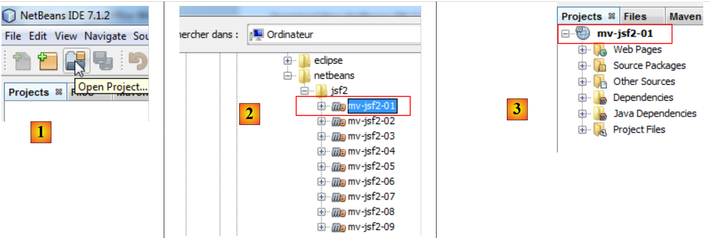
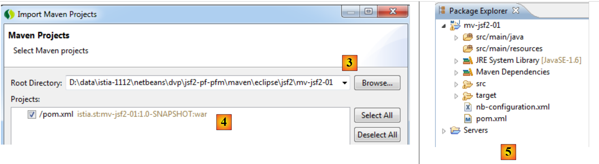
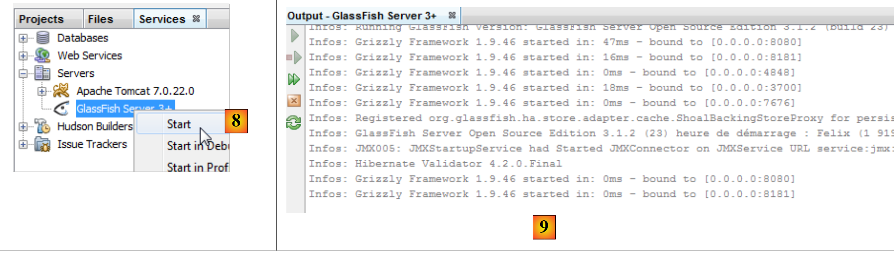
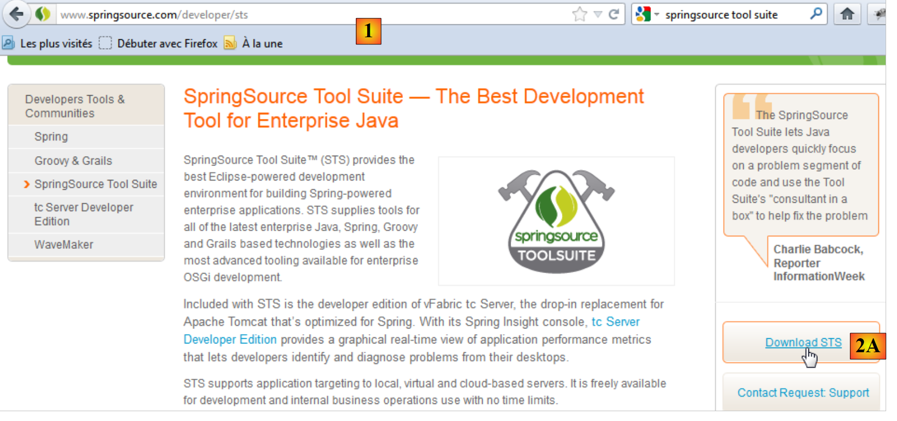
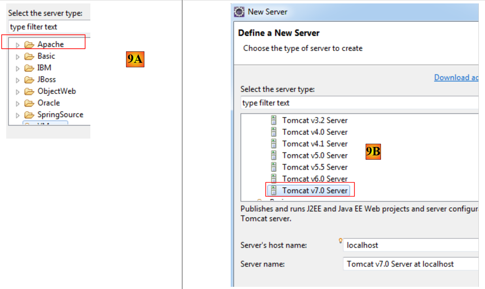
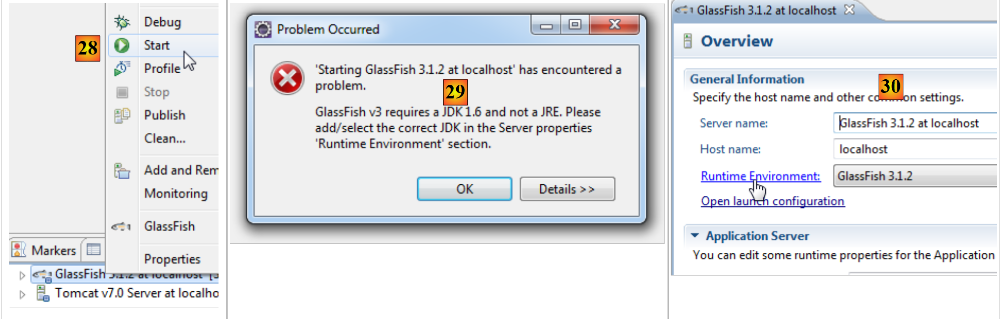
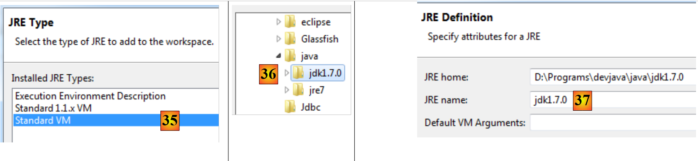

1. Introduction
1.1. Présentation
Le PDF de ce document est |ICI|.
Les exemples de ce document sont disponibles |ICI|.
Nous nous proposons ici d'introduire, à l'aide d'exemples
- le framework Java Server Faces 2 (JSF2),
- la bibliothèque de composants PrimeFaces pour JSF2, pour les applications de bureau et les mobiles.
Ce document est principalement destiné aux étudiants et développeurs intéressés par la bibliothèque de composants PrimeFaces [http://www.primefaces.org]. Ce framework propose plusieurs dizaines de composants ajaxifiés [http://www.primefaces.org/showcase/ui/home.jsf] permettant de construire des applications web ayant un aspect et un comportement analogues à ceux des applications de bureau. Primefaces s'appuie sur JSF2 d'où la nécessité de présenter d'abord ce framework. Primefaces propose de plus des composants spécifiques pour les mobiles. Nous les présenterons également.
Pour illustrer notre propos nous construirons une application de prise de rendez-vous dans différents environnements :
- une application web classique avec les technologies JSF2 / EJB3 / JPA sur un serveur Glassfish 3.1,
- la même application ajaxifiée, avec la technologie PrimeFaces,
- et pour finir, une version mobile avec la technologie PrimeFaces Mobile.
A chaque fois qu'une version aura été construite, nous la porterons dans un environnement JSF2 / Spring / JPA sur un serveur Tomcat 7. Nous construirons donc six applications Java EE.
Le document ne présente que ce qui est nécessaire pour construire ces applications. Aussi ne doit-on pas y chercher l'exhaustivité. On ne la trouvera pas. Ce n'est pas non plus un recueil de bonnes pratiques. Des développeurs aguerris pourront ainsi trouver qu'ils auraient fait les choses différemment. J'espère simplement que ce document n'est pas non plus un recueil de mauvaises pratiques.
Pour approfondir JSF2 et PrimeFaces on pourra utiliser les références suivantes :
- [ref1] : Java EE5 Tutorial [http://java.sun.com/javaee/5/docs/tutorial/doc/index.HTML], la référence Sun pour découvrir Java EE5. On lira la partie II [Web Tier] pour découvrir la technologie web et notamment JSF. Les exemples du tutoriel peuvent être téléchargés. Ils viennent sous forme de projets Netbeans qu'on peut charger et exécuter,
- [ref2] : Core JavaServer Faces de David Geary et Cay S. Horstmann, troisième édition, aux éditions Mc Graw-Hill,
- [ref3] : la documentation de PrimeFaces [http://primefaces.googlecode.com/files/primefaces_users_guide_3_2.pdf],
- [ref4] : la documentation de PrimeFaces Mobile : [http://primefaces.googlecode.com/files/primefaces_mobile_users_guide_0_9_2.pdf].
Nous ferons parfois référence à [ref2] pour indiquer au lecteur qu'il peut approfondir un domaine avec ce livre.
Le document a été écrit de telle façon qu'il puisse être compris par le plus grand nombre. Les pré-requis nécessaires à sa compréhension sont les suivants :
- connaissance du langage Java,
- connaissances de base du développement Java EE.
On trouvera sur le site [http://developpez.com] toutes les ressources nécessaires à ces pré-requis. On en trouvera certaines sur le site [http://tahe.developpez.com] :
- [ref5] : Introduction à la programmation web en Java (septembre 2002) : donne les bases de la programmation web en Java : servlets et pages JSP,
- [ref6] : Les bases du développement web MVC en Java (mai 2006) [] : préconise le développement d'applications web avec des architectures à trois couches, où la couche web implémente le modèle de conception (Design Pattern) MVC (Modèle, Vue, Contrôleur).
- [ref7] : Introduction à Java EE 5 (juin 2010). Ce document permet de découvrir JSF 1 et les EJB3.
- [ref8] : Persistance Java par la pratique (juin 2007). Ce document permet de découvrir la persistance des données avec JPA (Java Persistence API).
- [ref9] : Construire un service web Java EE avec Netbeans et le serveur Glassfish (janvier 2009). Ce document étudie la construction d'un service web. L'application exemple qui est étudiée dans le présent document provient de [ref9].
1.2. Les exemples
Les exemples du présent document sont disponibles à l'URL [https://stahe.github.io/jsf2-pf-pfm-juin-2012/jsf2-pf-pfm-juin-2012.zip] sous la forme de projets Maven à la fois pour Netbeans et Eclipse :
 |
Pour importer un projet sous Netbeans :
 |
- en [1], on ouvre un projet,
- en [2], on désigne le projet à ouvrir dans le système de fichiers,
- en [3], il est ouvert.
Avec Eclipse,
 |
- en [1], on importe un projet,
- en [2], le projet est un projet Maven existant,
 |
 |
- en [3] : on le désigne dans le système de fichiers,
- en [4] : Eclipse le reconnaît comme un projet Maven,
- en [5], le projet importé.
1.3. Les outils utilisés
Dans la suite, nous utilisons (mai 2012) :
- l'IDE (Integrated Development Environment) Netbeans 7.1.2 disponible à l'URL [http://www.netbeans.org],
- l'IDE Eclipse Indigo [http://www.eclipse.org/] sous sa forme customisée SpringSource Tool Suite (STS) [http://www.springsource.com/developer/sts],
- PrimeFaces dans sa version 3.2 disponible à l'URL [http://primefaces.org/],
- PrimeFaces Mobile dans sa version 0.9.2 disponible à l'URL [http://primefaces.org/],
- WampServer pour le SGBD MySQL [http://www.wampserver.com/].
1.3.1. Installation de l'IDE Netbeans
Nous décrivons ici l'installation de Netbeans 7.1.2 disponible à l'URL [http://netbeans.org/downloads/].
 |
On pourra prendre ci-dessus, la version Java EE avec les deux serveurs Glassfish 3.1.2 et Apache Tomcat 7.0.22. Le premier permet de développer des applications Java EE avec des EJB3 (Enterprise Java Bean) et l'autre des applications Java EE sans EJB. Nous remplacerons alors les EJB par le framework Spring [http://www.springsource.com/].
Une fois l'installateur de Netbeans téléchargé, on l'exécutera. Il faut pour cela avoir un JDK (Java Development Kit) [http://www.oracle.com/technetwork/java/javase/overview/index.HTML]. Outre Netbeans 7.1.2, on installera :
- le framework JUnit pour les tests unitaires,
- le serveur Glassfish 3.1.2,
- le serveur Tomcat 7.0.22.
Une fois l'installation terminée, on lance Netbeans :
 |
- en [1], Netbeans 7.1.2 avec trois onglets :
- l'onglet [Projects] visualise les projets Netbeans ouverts ;
- l'onglet [Files] visualise les différents fichiers qui composent les projets Netbeans ouverts ;
- l'onglet [Services] regroupe un certain nombre d'outils utilisés par les projets Netbeans,
- en [2], on active l'onglet [Services] et en [3] la branche [Servers],
- en [4], on lance le serveur Tomcat pour vérifier sa bonne installation,
 |
- en [6], dans l'onglet [Apache Tomcat] [5], on peut vérifier le lancement correct du serveur,
- en [7], on arrête le serveur Tomcat,
On procède de même pour vérifier la bonne installation du serveur Glassfish 3.1.2 :
 |
- en [8], on lance le serveur Glassfish,
- en [9] on vérifie qu'il s'est lancé correctement,
 |
- en [10], on l'arrête.
Nous avons désormais un IDE opérationnel. Nous pouvons commencer à construire des projets. Selon ceux-ci nous serons amenés à détailler différentes caractéristiques de l'IDE.
Nous allons maintenant installer l'IDE Eclipse et nous allons au sein de celui-ci enregistrer les deux serveurs Tomcat 7 et Glassfish 3.1.2 que nous venons de télécharger. Pour cela, nous avons besoin de connaître les dossiers d'installation de ces deux serveurs. On trouve ces informations dans les propriétés de ces deux serveurs :
 |
- en [1], le dossier d'installation de Tomcat 7,
 |
- en [2], le dossier des domaines du serveur Glassfish. Dans l'enregistrement de Glassfish dans Eclipse, il faudra donner seulement l'information suivante [D:\Programs\devjava\Glassfish\glassfish-3.1.2\glassfish].
1.3.2. Installation de l'IDE Eclipse
Bien qu'Eclipse ne soit pas l'IDE qui soit utilisé dans ce document, nous en présentons néanmoins l'installation. En effet, les exemples du document sont également livrés sous la forme de projets Maven pour Eclipse. Eclipse ne vient pas avec Maven pré-intégré. Il faut installer un plugin pour ce faire. Plutôt qu'installer un Eclipse brut, nous allons installer SpringSource Tool Suite [http://www.springsource.com/developer/sts], un Eclipse pré-équipé avec de nombreux plugins liés au framework Spring mais également avec une configuration Maven pré-installée.
 |
- aller sur le site de SpringSource Tool Suite (STS) [1], pour télécharger la version courante de STS [2A] [2B],
 |
 |
- le fichier téléchargé est un installateur qui crée l'arborescence de fichiers [3A] [3B]. En [4], on lance l'exécutable,
- en [5], la fenêtre de travail de l'IDE après avoir fermé la fenêtre de bienvenue. En [6], on fait afficher la fenêtre des serveurs d'applications,
 |
- en [7], la fenêtre des serveurs. Un serveur est enregistré. C'est un serveur VMware que nous n'utiliserons pas. En [8], on appelle l'assistant d'ajout d'un nouveau serveur,
 |
- en [9A], divers serveurs nous sont proposés. Nous choisissons d'installer un serveur Tomcat 7 d'Apache [9B],
 |
- en [10], nous désignons le dossier d'installation du serveur Tomcat 7 installé avec Netbeans. Si on n'a pas de serveur Tomcat, utiliser le bouton [11],
- en [12], le serveur Tomcat apparaît dans la fenêtre [Servers],
 |
- en [13], nous lançons le serveur,
- en [14], il est lancé,
- en [15], on l'arrête.
Dans la fenêtre [Console], on obtient les logs suivants de Tomcat si tout va bien :
 |
- toujours dans la fenêtre [Servers], on ajoute un nouveau serveur [16],
- en [17], le serveur Glassfish n'est pas proposé,
- dans ce cas, on utilise le lien [18],
 |
- en [19], on choisit d'ajouter un adaptateur pour le serveur Glassfish,
- celui est téléchargé et de retour dans la fenêtre [Servers], on ajoute un nouveau serveur,
- cette fois-ci en [21], les serveurs Glassfish sont proposés,
 |
- en [22], on choisit le serveur Glassfish 3.1.2 téléchargé avec Netbeans,
- en [23], on désigne le dossier d'installation de Glassfish 3.1.2 (faire attention au chemin indiqué en [24]),
- si on n'a pas de serveur Glassfish, utiliser le bouton [25],
 |
- en [26], l'assistant nous demande le mot de passe de l'administrateur du serveur Glassfish. Pour une première installation, c'est normalement adminadmin,
- lorsque l'assistant est terminé, dans la fenêtre [Servers], le serveur Glassfish apparaît [27],
 |
- en [28], on le lance,
- en [29] un problème peut survenir. Cela dépend des informations données à l'installation. Glassfish veut un JDK (Java Development Kit) et non pas un JRE (Java Runtime Environment),
- pour avoir accès aux propriétés du serveur Glassfish, on double-clique dessus dans la fenêtre [Servers],
- on obtient la fenêtre [20] dans laquelle on suit le lien [Runtime Environment],
 |
- en [31], on va remplacer le JRE utilisé par défaut par un JDK. Pour cela, on utilise le lien [32],
- en [33], les JRE installés sur la machine,
- en [34], on en ajoute un autre,
 |
- en [35], on choisit [Standard VM] (Virtual Machine),
- en [36], on sélectionne d'un JDK (>=1.6),
- en [37], le nom donné au nouveau JRE,
 |
- revenu au choix du JRE pour Glassfish, nous choisissons le nouveau JRE déclaré [38],
- une fois l'assistant de configuration terminé, on relance [Glassfish] [39],
- en [40], il est lancé,
 |
- en [41], l'arborescence du serveur,
- en [42], on accède aux logs de Glassfish :
 |
- en [43], nous arrêtons le serveur Glassfish.
1.3.3. Installation de [WampServer]
[WampServer] est un ensemble de logiciels pour développer en PHP / MySQL / Apache sur une machine Windows. Nous l'utiliserons uniquement pour le SGBD MySQL.
 |
- sur le site de [WampServer] [1], choisir la version qui convient [2],
- l'exécutable téléchargé est un installateur. Diverses informations sont demandées au cours de l'installation. Elles ne concernent pas MySQL. On peut donc les ignorer. La fenêtre [3] s'affiche à la fin de l'installation. On lance [WampServer],
 |
- en [4], l'icône de [WampServer] s'installe dans la barre des tâches en bas et à droite de l'écran [4],
- lorsqu'on clique dessus, le menu [5] s'affiche. Il permet de gérer le serveur Apache et le SGBD MySQL. Pour gérer celui-ci, on utiliser l'option [PhpPmyAdmin],
- on obtient alors la fenêtre ci-dessous,

Nous donnerons peu de détails sur l'utilisation de [PhpMyAdmin]. Nous montrerons simplement comment l'utiliser pour créer la base de données de l'application exemple de ce tutoriel.